Stem borer (Diptera: Agromyzidae) in Ageratina
| Record no.: | 0030, 0031 |
|---|---|
| Feeding guild: | Stem borer |
| Taxonomy: | Diptera: Agromyzidae |
| Stages observed: | trace, larva, puparium |
| Distribution observed: | IA |
| Hosts in Ageratina: | A. altissima (white snakeroot) |
I first encountered an agromyzid borer in white snakeroot in 2023, in the form of a puparium overwintering in a tunnel in the pith of an upper stem belonging to a short-statured plant. The plant had grown only ~18 inches tall in the shade of eastern red cedar (Juniperus virginiana) trees, and its outer stem diameter was only 1.75mm at the puparium's location in the upper stem. The puparium was a mere 2.0mm in length. Its posterior spiracular plates were dark brown, slightly elevated, and separated by approximately their own diameter, with roughly 8-10 bulbs each.
Later, I found similar puparia, most about 2.2mm in length but one 3.1mm long, and with up to 14 bulbs on the posterior spiracular plates, in the pith of variously-sized lower stems of the host. Most of the upper and lower stem puparia each contained a solitary parasitoid wasp larva along with a large deposit of black material (meconium?) pooled on the inner wall of the posterior portion of the puparium. My attempts to rear puparia to adulthood have so far only produced parasitoid wasps.
Additionally, I found a larva tunneling in the pith in the base of a wilted stem in July. Just below this larva's area of activity, the stem contained a caterpillar of a cochyline tortricid, cf. Aethes angustana sp. grp. (record 0025), whose work appeared to be the primary cause of the wilting. The agromyzid larva showed 8 and 11 bulbs in its posterior spiracles.
My initial looks at the posterior spiracles of the agromyzid larva and puparia weren't sufficient to provide much insight on how many agromyzid species might be represented in these observations. An adult female agromyzid identified as Melanagromyza virens has been previously reared from a puparium found overwintering in a stem of this host (Lonsdale 2021). Spencer and Steyskal (1986) describe and illustrate a "strong central horn" on each of the posterior spiracular plates of the M. virens puparium, while the larva and puparia I found in white snakeroot showed either very short, stublike horns or none at all.
Despite examining many agromyzid puparia from inside white snakeroot stems, I have yet to find a viable one. This mirrors the situation with the tephritid borer (0029), in which internally-formed puparia often seem to be parasitized. With the tephritid, the pupation location for healthy larvae is generally in the soil, according to Stoltzfus (1988), and it is possible this could be the case for the agromyzid as well, but more information is needed.
See also: Ageratina stem insects compilation
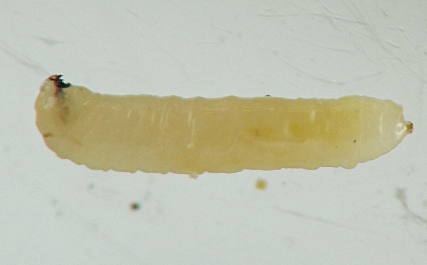
 Prev
Prev
{kind=link}
{kind=link}
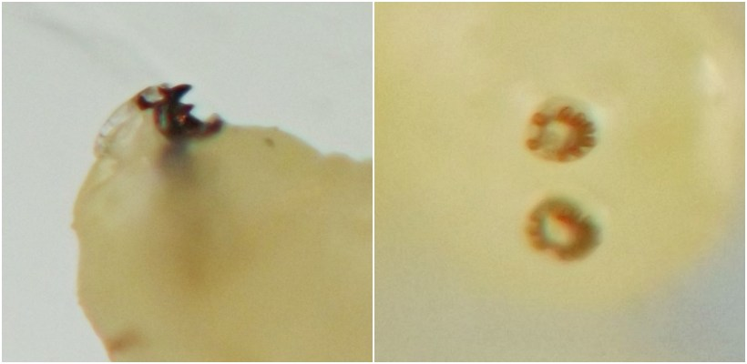
{kind=link}
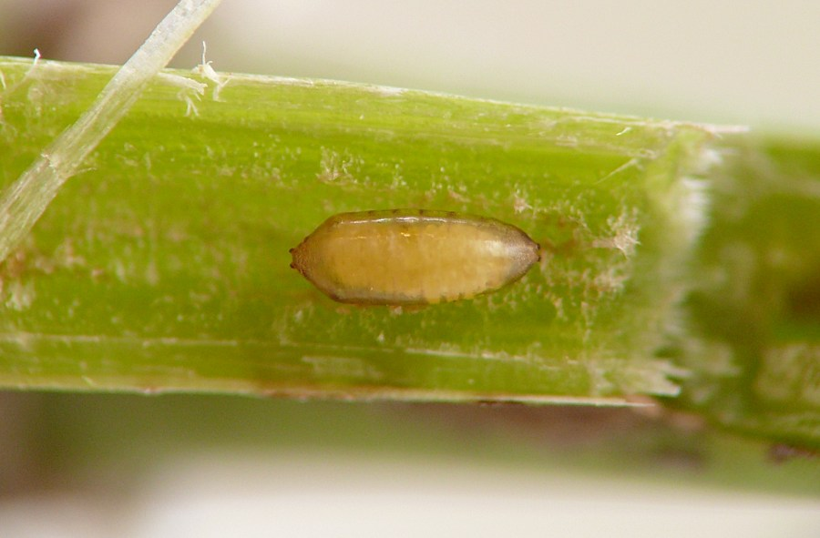
{kind=link}
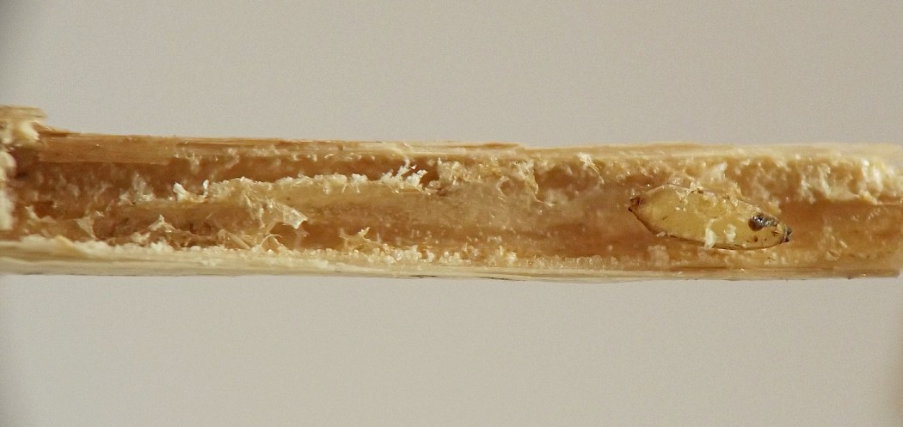
{kind=link}
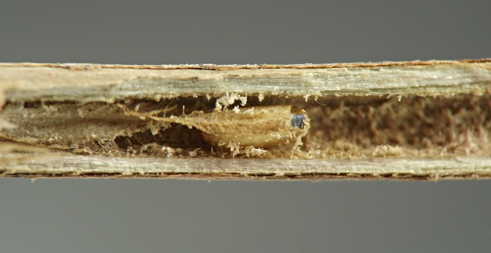
{kind=link}
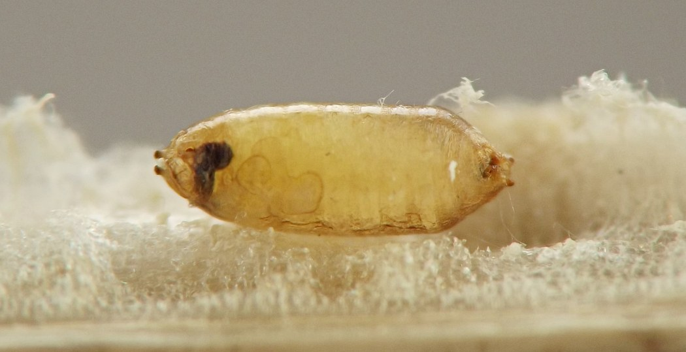
{kind=link}
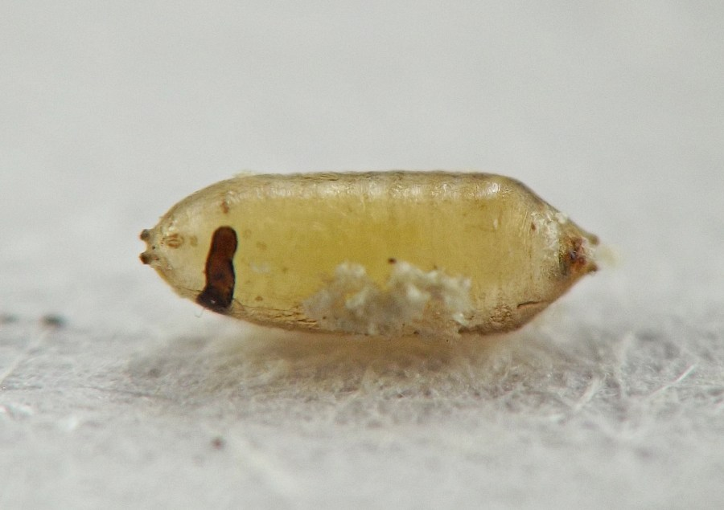
{kind=link}
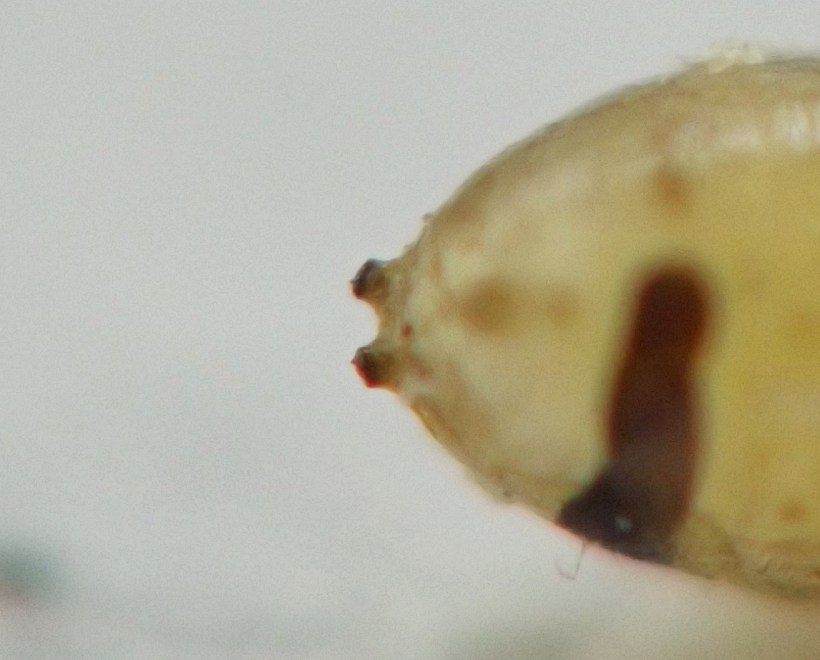
{kind=link}
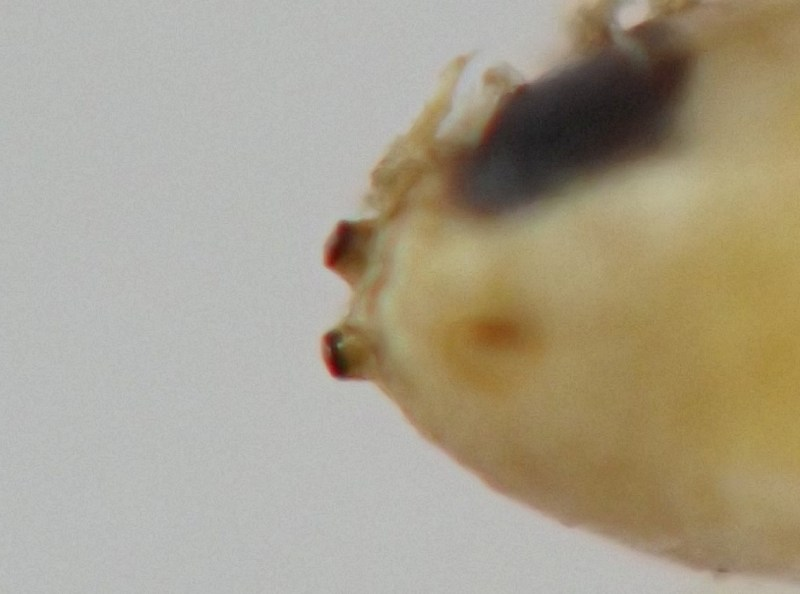
{kind=link}
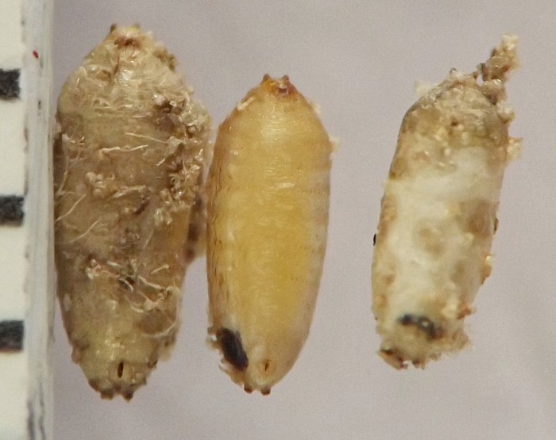
{kind=link}
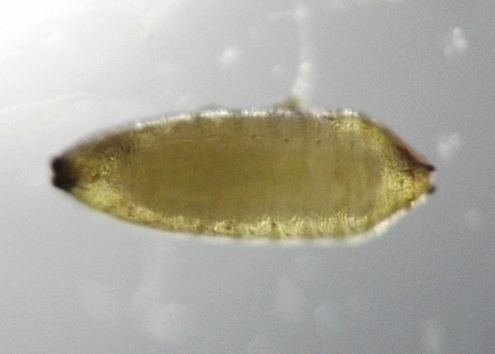
{kind=link}
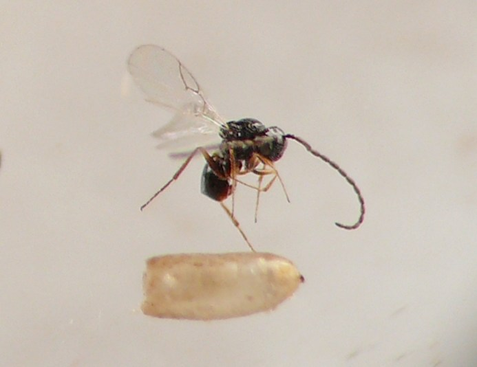
- Lonsdale, O. 2021. Manual of North American Agromyzidae (Diptera, Schizophora), with revision of the fauna of the “Delmarva” states. ZooKeys 1051: 1–481. DOI: https://doi.org/10.3897/zookeys.1051.64603.[return to in-text citation]
- Spencer, K.A., and G.C. Steyskal. 1986. Manual of the Agromyzidae (Díptera) of the United States. U.S. Dept. of Agriculture, Agriculture Handbook No. 638.[return to in-text citation]
- Stoltzfus, W.B. 1988. The taxonomy and biology of Strauzia (Diptera: Tephritidae). Jour. Iowa Acad. Sci. 95(4): 117-126.[return to in-text citation]
Page created: February 9, 2026. Last update: March 30, 2026